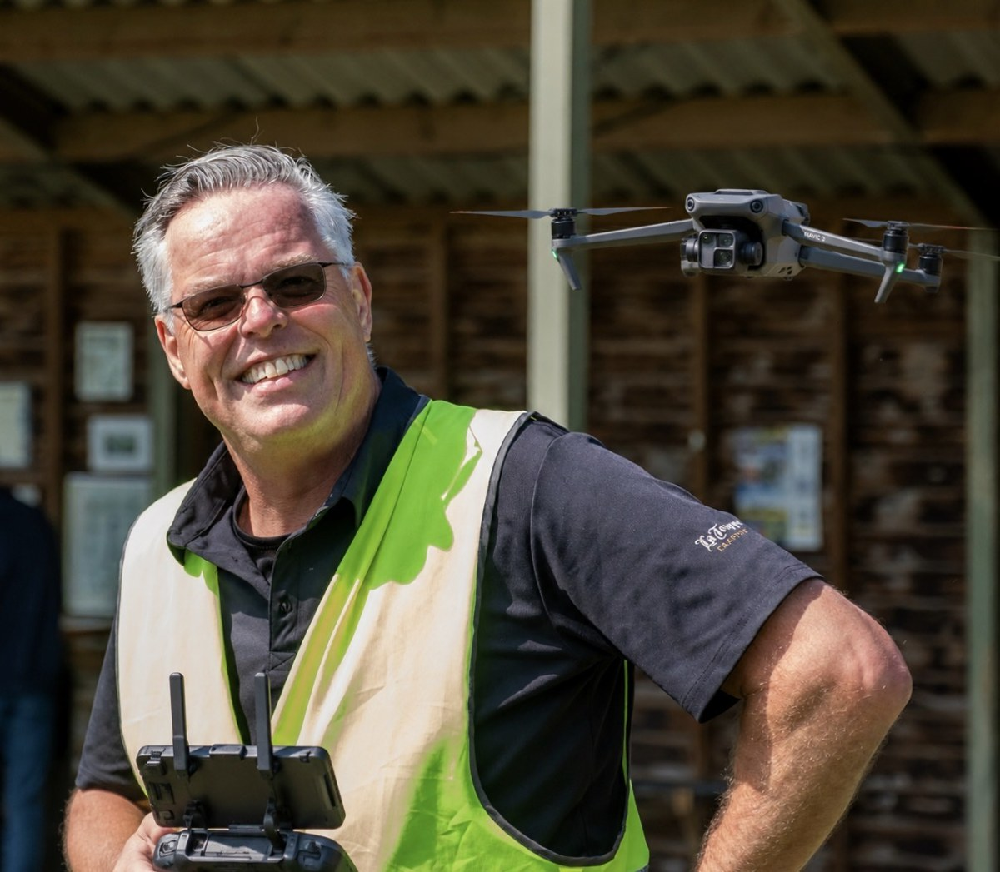

3D-wereld wordt geladen. Deze versie gebruikt missiebeelden voor brug, molen, kerk, straat, bos, plein en mensenmenigte. Werkt dit niet? Open dan de
fotosimulator .
MISSIE: vlieg door de ringen Punt 1 van 5
Hoogte 0 m Accu 100% Snelheid 0 m/s
Stijg op, vlieg door 5 ringen en keer terug naar de landingsmat.
＋
Camera: volgen ↶ kijk kijk ↷ kijk ↑ kijk ↓

Welkom bij De Wolf's Drone Missie Academie Kies een route en toestel. De missiefoto verandert mee met de oefenwereld.
Kies een toestel DJI Mini 4 Pro · C0-configuratie DJI Neo · C0 DJI Mavic 2 Zoom · legacy A3
Oefenwereld Routevariant Wisselende basisroute Onder de brug (rivier) 360° rond de molen 360° rond de kerk Tussen bomen door Huizenrij en straat Stadsplein en obstakels Mensenmenigte: veiligheidsmissie Combi-route: brug, bos en straat Dorp, tuinen en bos Rivier en brug Straat en huizenrij Plein en voetgangers Industrie en verkeer Luchthaven: beperkingsgebied
Vlucht ↑ Opstijgen ↓ Landen ⌂ RTH – automatisch terug ◎ Landingscamera 90° Ⅱ Pauze
Vijf echte 3D-controlepunten. In versie 3.7 oefen je met meer routevarianten, sterkere landinghulp, extra routewisselingen en duidelijkere coach-feedback. Botsen tegen gebouwen, bomen, verkeer of mensen beëindigt de vlucht. Gebruik RTH voor automatisch terugvliegen en de landingscamera om netjes op de H te landen.
Score: 0 · 0/5 punten
Missiecoach Route-info verschijnt hier.
Coachadvies verschijnt hier.
Landinghint: gebruik RTH of de 90° landingscamera voor een precieze landing op de H-mat.
Toetsen W / S stijgen en dalen↑ ↓ voor- en achteruit← → zijwaartsA / D draaienQ / E camera draaienR / F camera omhoog en omlaag1 / 2 / 3 / 4 camera volgen, FPV, vrij, loodrecht omlaag
Wat is dit? Een werkende 3D-trainingswereld met ruimtelijke routes, herkenbare missiebeelden en vereenvoudigd vliegmodel. Geen DJI-goedgekeurde simulator en geen actuele dronekaart. Gebruik deze app om te oefenen met besturing, landing, RTH en veiligheidskeuzes.